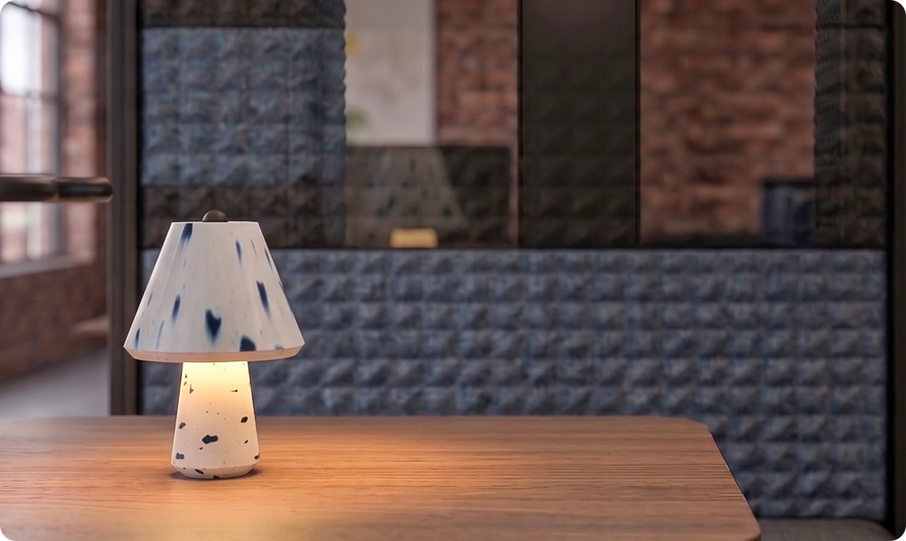
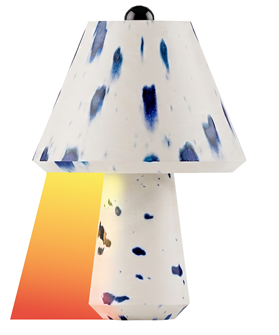
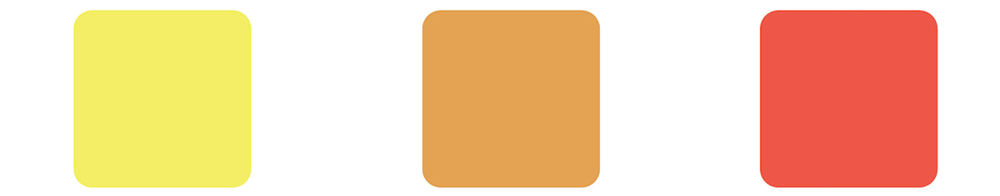
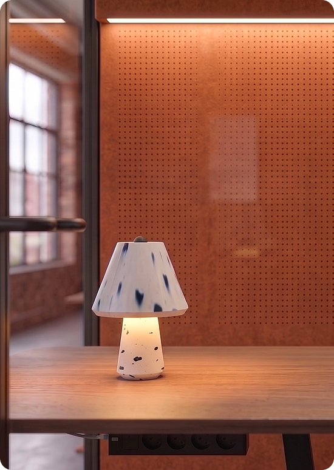
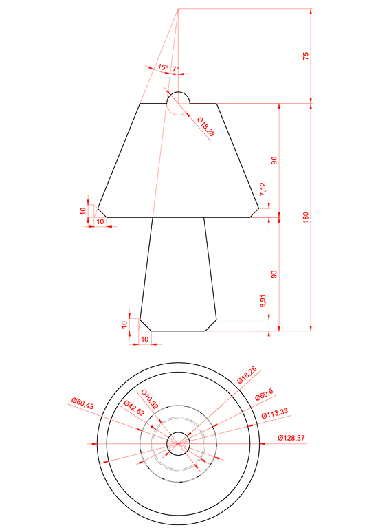
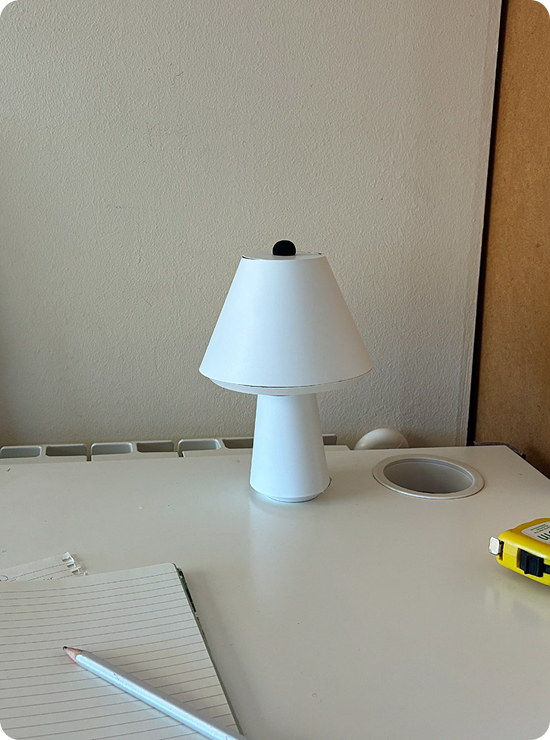
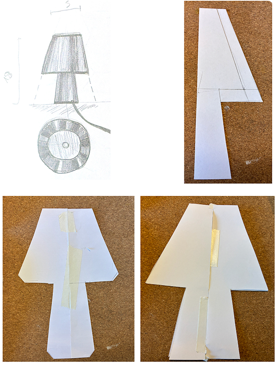
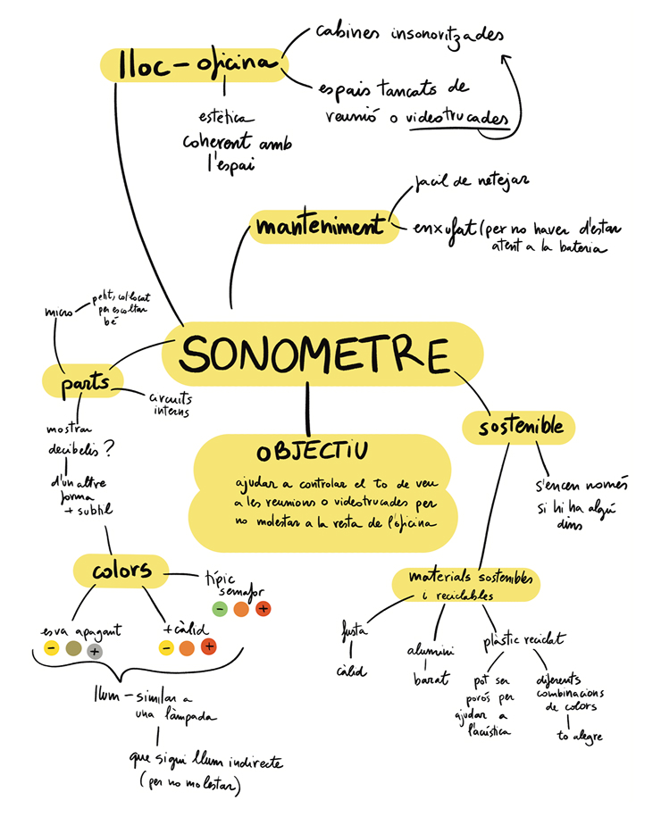

Hush: Noise-Aware Desk Light
2026
University Project

Hush is a smart office desk lamp that translates sound into color. Its objective is to help workers realize when they are speaking too loudly in a very subtle way.
The project originated from research and interviews with office workers regarding acoustic issues. I realized that people tend to unconsciously raise their voices during video conferences, causing disturbances even when they are inside soundproof phone booths.
Hush aims to resolve this issue not by adding more physical barriers to block sound, but by fostering the user's self-awareness of their own tone.
The lamp features a compact design so it doesn't clutter the workspace, and it is made from recycled plastic, adding a playful and sustainable touch. It operates on a 3 color system:


Yellow (under 55 dB) when the volume is optimal.
Orange (between 55 and 70 dB) as a warning that the voice is rising.
Red (over 70 dB) to indicate that the noise level is bothering other workers.





To complement the physical product, I also developed an app prototype and an interactive demonstration website.
The application is designed for companies to manage all the Hush lamps in the office, allowing them to customize the decibel ranges by zone.
Meanwhile, the website allows potential users to test the color-response system interactively, giving them a clear understanding of how the product works before purchasing.